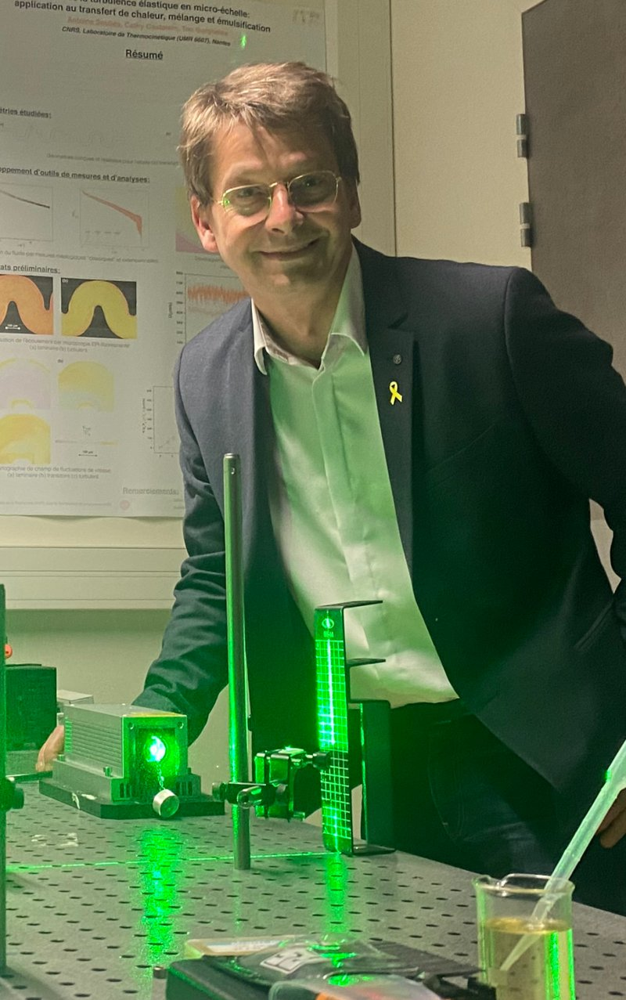

Complex Fluids · LTeN · CNRS
Teodor (Teo) Burghelea
Directeur de Recherche CNRS (Dr. Habil.) · Laboratoire de Thermique et Énergie de Nantes (LTeN, UMR 6607), Nantes Université
We study how heat, mass and momentum are transported in complex fluids: polymer solutions and melts, yield-stress materials, physical gels and suspensions of micro-algae. Our work combines table-top and microfluidic experiments, rheometry, simple physical models and numerical simulation. Current topics include elastic turbulence, chaotic mixing, and the yielding of elasto-viscoplastic materials.

News
Teo hosts Prof. Alidad Amirfazli (York University, Toronto) for two weeks, from 7 to 19 July. Prof. Amirfazli introduces us to applications of AI in the study of complex fluids. Two weeks of intensive and fruitful interactions!
Teo visits the University of Cyprus (Department of Mathematics and School of Engineering), hosted by Prof. Georgios Georgiou. The goals: study the propagation of yield surfaces in elasto-viscoplastic materials, and set up a joint ERASMUS agreement with the University of Cyprus.
Teo co-organised the advanced course “Fluid mixing: fundamentals and practices” at CISM (Udine, Italy). A distinguished panel of lecturers and around 40 participants from 14 countries made it a very exciting week on fluid mixing and its applications.
Teo attended the AERC meeting in Lyon (13–18 April). A nice meeting, and a nice gala dinner with an exquisite show and many prizes awarded among friends.
We welcome Masaya Hashimoto, who joins the team as a PhD student working on fuel extraction from the micro-alga Botryococcus braunii, co-advised by Teo, Agnès Montillet, Jérôme Bellettre and Jérémy Pruvost. Welcome aboard, Masaya!
Teo co-organised a one-day scientific meeting on Complex Fluids and Complex Flows in Lille (15 November). Thanks to the local organisers, Francesco Romano and Stefano Berti, and to all participants!
LTeN laboratory retreat in Pornic (3–4 October).
Prof. Volfango Bertola (University of Liverpool) visits the group. Teo and Volfango have a lot of fun learning how toothpaste drips through a thin needle.